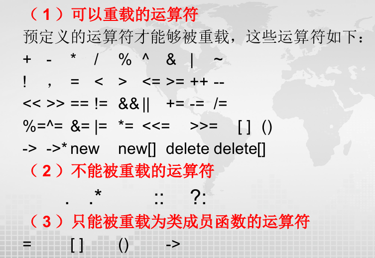

Chapter5 运算符重载
5.1 运算符重载基础
$~$

$~$
基本原则：
- 不能改变优先级
- 不能改变结合方向
- 不能使用默认参数
- 不能改变参数个数
- 不能创造新运算符
- 不能改变原有含义
- 若运算符被重载为类的成员函数，则不能静态
$~$
语法：
| type operator@(parameter)
|
其中，type是返回类型，operator是关键字，@是要重载的运算符，parameter是参数列表。
$~$
与类相关的运算符重载：
类默认生成的运算符重载函数：
- 赋值运算符
=
- 取地址运算符
&
- 成员访问运算符
.和->
其他运算符重载了才能应用。
类运算符重载方式：
- 重载为类的非静态成员函数
- 重载为类的友元函数或普通函数
$~$
非静态成员函数的重载运算符：
运算符重载为类成员函数时，第一个参数通过this指针隐式传递，因此参数个数表面上会少一个，例如：
| class Complex
{
double real,image;
public:
Complex operator+(Complex x){...}
};
int main()
{
Complex a,b,c;
a=b+c; //等价于a=b.operator+(c)
}
|
$~$
友元或普通函数的重载运算符：
运算符重载为友元或者普通函数时，参数个数与运算符实际参数个数相同，例如：
| class Complex
{
friend Complex operator+(Complex a,Complex b);
};
Complex operator+(Complex a,Complex b){...} //友元函数
Complex operator-(Complex a,Complex b){...} //普通函数
|
Note
运算符重载应该重载为成员函数还是普通函数？
=,[],(),->等必须重载为成员函数；
+=,-=,*=,/=,++,--,解引用的*等建议重载为成员函数；
算术运算、关系运算、位运算等建议重载为普通函数。
$~$
5.2 重载二元运算符
精确匹配优先级高于类型转换，成员函数优先级高于普通函数。
| class X
{
public:
X(int);
void operator+(int); //重载函数1
};
void operator+(X,X); //重载函数2
void operator+(X,double); //重载函数3
void f(X a)
{
a+2;
2+a;
a+2.0;
}
|
a+2能匹配到重载函数1、重载函数2（需要int通过X(int)转换为X）和重载函数3（int转换成double），由于精确匹配优先级高于类型转换，因此实际匹配重载函数1。
2+a只能能匹配到重载函数2，2通过X(int)转换为X。
a+2.0能匹配到重载函数1（int转换成double）、重载函数2（先从double转换成int，再通过X(int)转换成X）和重载函数3，由于精确匹配优先级高于类型转换，因此实际匹配重载函数3。
Note
注意，该类应具有能够接受一个参数的构造函数，此构造函数具有将此参数转换成类类型的能力。
Example
设计复数类Complex，利用成员运算符函数重载实现复数的加减运算，用友元运算符函数重载实现复数的乘除等运算。
| class Complex
{
private:
double r,i;
public:
Complex (double R=0,double I=0):r(R),i(I){};
Complex operator+(Complex b);
Complex operator-(Complex b);
friend Complex operator*(Complex a,Complex b);
friend Complex operator/(Complex a,Complex b);
void display();
};
Complex Complex::operator+(Complex b){return Complex(r+b.r,i+b.i);}
Complex Complex::operator-(Complex b){return Complex(r-b.r,i-b.i);}
Complex operator*(Complex a,Complex b)
{
Complex t;
t.r=a.r*b.r-a.i*b.i;
t.i=a.r*b.i+a.i*b.r;
return t;
}
Complex operator/(Complex a,Complex b)
{
Complex t;
double x;
x=1/(b.r*b.r+b.i*b.i);
t.r=(a.r*b.r+a.i*b.i)*x;
t.i=(a.i*b.r-a.r*b.i)*x;
return t;
}
void Complex::display()
{
cout<<r;
if(i>0) cout<<"+";
if(i!=0) cout<<i<<"i"<<endl;
}
int main()
{
Complex c1(1,2),c
2(3,4),c3,c4,c5,c6;
c3=c1+c2;
c4=c1-c2;
c5=c1*c2;
c6=c1/c2;
c1.display(); //1+2i
c2.display(); //3+4i
c3.display(); //4+6i
c4.display(); //-2-2i
c5.display(); //-5+10i
c6.display(); //0.44+0.08i
}
|
$~$
5.3 重载一元运算符
$~$
作为成员函数重载：
Note
像++和--这样能实现连续变化的运算符（++++a），其重载函数应该返回对象的引用而不是值传递。
Example
设计一个事件类Time，能够实现秒钟的自增运算。
| class Time
{
private:
int hour,minute,second;
public:
Time(int h,int m,int s);
Time& operator++();
void display();
};
Time::Time(int h,int m,int s)
{
hour=h;
minute=m;
second=s;
if(hour>=24) hour=0;
if(minute>=60) minute=0;
if(second>=60) second=0;
}
Time& Time::operator++()
{
++second;
if(second>=60)
{
second=0;
++minute;
if(minute>=60)
{
minute=0;
++hour;
if(hour>=24) hour=0;
}
}
return *this;
}
void Time::display()
{
cout<<hour<<":"<<minute<<":"<<second<<endl;
}
int main()
{
Time t(23,59,59);
t.display(); //23:59:59
++++t;
t.display(); //0:0:01
t.operator++();
t.display(); //0:0:02
}
|
$~$
作为友元函数重载：
Example
分析下面错误：
| class Time
{
private:
...
public:
Time(int h,int m,int s);
void display();
friend Time operator++(Time t); //友元函数，输入和输出均为值
};
Time::Time(int h,int m,int s)
{
...
}
Time operator++(Time t)
{
++t.second;
if(t.second>=60)
{
t.second=0;
++t.minute;
if(t.minute>=60)
{
t.minute=0;
++t.hour;
if(t.hour>=24) t.hour=0;
}
}
return t;
}
void Time::display()
{
...
}
int main()
{
Time t(23,59,59);
t.display();
++++t;
t.display();
t.operator++();
t.display();
}
|
三个输出结果均为23:59:59，因为友元函数传值，所以本质上并不会改变t这个对象的数据成员。
$~$
5.4 特殊运算符重载
$~$
前后缀重载区分：
通过在函数参数表中放置一个无用的关键字int来区分前后缀。
例如：自增前缀：
| operator++(); //成员函数
operator++(X& x); //友元或普通函数
|
自增后缀：
| operator++(int); //成员函数
operator++(X& x,int); //友元或普通函数
|
$~$
下标运算符[]：
在正常情况下，数组不具有检测下标值范围的功能，容易产生越界。通过下标运算符重载，可以在访问数据元素史进行下标值检测，防止越界。
| class X
{
X& operator[](int n);
};
|
[]只能重载为类的非静态成员函数，不能是友元或普通函数[]为二元运算符，第一个参数由this指针传递，第二个参数表示数组下标[]既可以出现在左值，也可以出现在右值，因此重载时常返回引用
Example
设计一个工资管理类。
| struct Person //职工基本信息的结构
{
char* name;
double salary;
}
class SalaryManage
{
Person* employ; //存放职工信息的数组
int max; //数组下标上界
int n; //数组中的实际职工人数
public:
SalaryManage(int Max=0)
{
max=Max;
n=0;
employ=new Person[max];
}
double& operator[](char* Name)
{
Person* p;
for(p=employ;p<employ+n;p++)
{
if(strcmp(p->name,Name)==0) return p->salary; //比较两个字符串是否相等
}
p=employ+(n++);
p->name=new char[strlen(Name)+1]; //strlen不包括'\0'，因此+1
strcpy(p->name,Name);
p->salary=0;
return p->salary;
}
void display()
{
for(int i=0;i<n;i++)
{
cout<<employ[i].name<<" "<<employ[i].salary<<endl;
}
}
};
int main()
{
SalaryManage s(3);
s["Alex"]=1000;
s["Bob"]=2000;
s["Cathy"]=3000;
cout<<"Alex:"<<s["Alex"]<<endl; //输出：Alex:1000
cout<<"Bob:"<<s["Bob"]<<endl; //输出：Bob:2000
cout<<"Cathy:"<<s["Cathy"]<<endl; //输出：Cathy:3000
s.display(); //输出：
//Alex 1000
//Bob 2000
//Cathy 3000
}
|
$~$
赋值运算符=：
如果一个类的对象没有分配动态存储空间，那么默认赋值运算符一般都能正确工作；否则建议重载赋值运算符。
=只能用成员函数重载。
$~$
类型转换运算符：
隐式类型转换发生的时机：
用构造函数实现类的类型转换。例如，若将类Y转换成类X，用如下形式的构造函数：
| class X
{
public:
X(Y y){...};
};
...
Y y;
X x1=y;
X x2(y);
x1=y;
|
Example
有日期类Date，设计其构造函数，能够将整型数据转换成一个Date类的对象。
| class Date
{
private:
int year,month,day;
public:
Date(int yy=1900,int mm=1,int dd=1)
{
year=yy;
month=mm;
day=dd;
}
void Show()
{
cout<<year<<"-"<<month<<"-"<<day<<endl;
}
};
int main()
{
Date d(2000,10,11);
d.Show(); //2000-10-11
d=2006; //由 Date的构造函数可以接受单个int参数（mm和dd有默认值），编译器会自动调用Date(2006)构造一个临时 Date 对象，然后赋值给d
d.Show(); //2006-1-1
}
|
此外，还可以通重载类型转换运算符（类型转换函数），将类X转换为类Y：
| class X
{
public:
operator Y()
{
...
return Y类型的数据;
}
};
|
- 类型转换函数没有参数，函数声明/定义时不写返回类型，但必须返回将要转换成的类型。
- 类型转换函数必须是非静态的成员函数，不能是友元或普通函数。
Example
有一个类Circle，设计该类的类型转换函数，当将Circle对象转换成int型时，返回圆的半径；当将它转换成double型时，就返回圆的周长；当将它转换成float型时，就返回圆的面积。
| class Circle
{
private:
double x,y,r;
public:
Circle(double x1,double y1,double r1){x=x1;y=y1;r=r1;}
operator int(){return int(r);}
operator double(){return 2*3.14*r;};
operator float(){return (float)3.14*r*r;}
};
int main()
{
Circle c(2.3,2.4,2.5);
int r=c; //隐式转换，调用Circle::operator int()
double length=c; //隐式转换，调用Circle::operator double()
float area=c; //隐式转换，调用Circle::operator float()
double len=(double)c; //隐式转换，调用Circle::operator double()
cout<<r<<endl; //2
cout<<length<<endl; //15.7079
cout<<area<<endl; //19.625
cout<<len<<endl; //15.7079
}
|
Note
需要注意类型转换的二义性问题，例如，类B同时设置了int和double类型参数的构造函数，以及将类B转换成int和float类型的转换函数：
| class B
{
double x;
public:
B(int a=0):x(a){}
B(double b=0.0):x(b){}
operator int(){return x;}
operator float(){return x;}
};
void f(long l){cout<<l<<endl;}
int main()
{
B b(4); //无法确定调用B::B(int)还是B::B(double)
f(b); //无法确定调用operator int()还是operator float()
}
|
$~$
仿函数（functor）：
仿函数即为函数调用运算符()，也能被重载，但只能被重载为类的成员函数。
重载形式如下：
| class X
{
...
type operator()(参数表);
};
|
其中，参数表中的参数可以包括任意多个。
调用形式如下：
| X Obj;
Obj()(参数表); //调用形式1
Obj(参数表); //调用形式2
|
Example
设计点类Point，具有表示坐标位置的数据成员x和y，重载函数调用运算符，其功能是可以用指定的参数移动坐标x和y，或者输出点的坐标值。
| class Point
{
public:
Point(int a=0,int b=0):x(a),y(b){}
Point& operator()(int dx,int dy) //第一个函数调用运算符
{
x+=dx;
y+=dy;
return *this;
}
Point operator()(int dxy) //第二个函数调用运算符
{
x+=dxy;
y+=dxy;
return *this;
}
void operator()() //第三个函数调用运算符
{
cout<<"["<<x<<","<<y<<"]"<<endl;
}
};
int main()
{
Point pt1,pt2(2,2); //分别调用构造函数Point::Point()和Point(int,int)
pt1=pt2(3,6); //调用第一个函数调用运算符
pt1(); //调用第三个函数调用运算符，输出[5,8]
}
|
$~$
输出运算符<<：
| ostream& operator<<(ostream& os,classType object)
{
...
os<<...; //输出对象的实际数据成员
return os; //返回ostream对象
}
|
$~$
输入运算符>>：
| istream& operator>>(istream& is,classType& object)
{
...
is>>...; //输入对象的实际数据成员
return is; //返回istream对象
}
|
Example
有一销售人员类Sales，其数据成员有姓名name，身份证号id，年龄age。重载输入输出运算符实现对Sales类数据成员的输入和输出。
| class Sales
{
private:
string name;
string id;
int age;
public:
Sales(string Name,string ID,int Age);
friend ostream& operator<<(ostream& os,Sales& s);
friend istream& operator>>(istream& is,Sales& s);
}
Sales::Sales(string Name,string ID,int Age)
{
name=Name;
id=ID;
age=Age;
}
ostream& operator<<(ostream& os,Sales& s)
{
os<<s.name<<" ";
os<<s.id<<" ";
os<<s.age<<endl;
return os;
}
istream& operator>>(istream& is,Sales& s)
{
cout<<" 输入雇员的姓名，身份证号，年龄"<<endl;
is>>s.name>>s.id>>s.age;
return is;
}
int main()
{
Sales s("Alex","123",40);
cout<<s<<endl;
cin>>s;
cout<<s<<endl;
}
|
程序运行结果如下：
Alex 123 40
输入雇员的姓名，身份证号，年龄
Tom 100 23
Tom 100 23